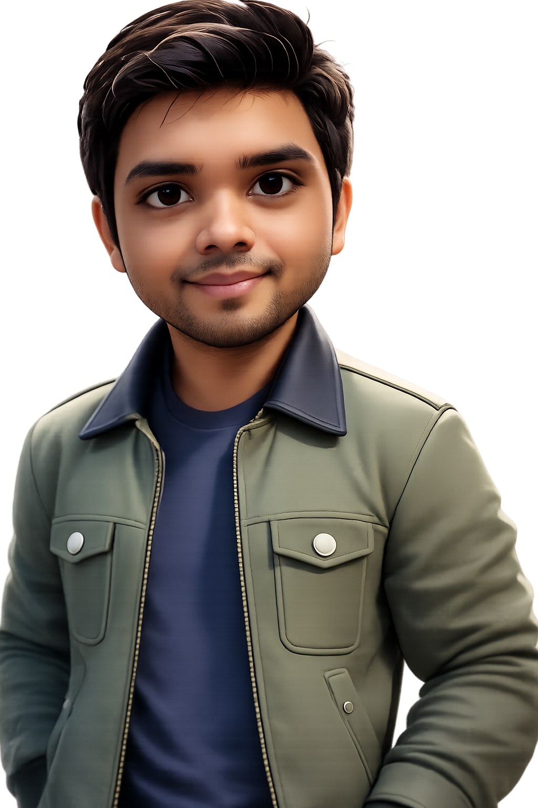

PhD Student · Computer Science · University of Central Florida
Shajedul Hasan Arman
I build explainable, self-supervised learning systems for biomedical imaging — models that clinicians can interrogate, not just trust. My work sits at the intersection of XAI (SHAP, Grad-CAM), contrastive representation learning, and clinical decision support.

Short bio
Shajedul Hasan Arman (also known as Arman Hasan) is a Ph.D. student in Computer Science at the University of Central Florida (UCF), where his research focuses on explainable and self-supervised learning for biomedical imaging — building clinical AI models whose predictions can be interrogated and verified, not just trusted. His work spans XAI methods (SHAP, Grad-CAM), contrastive representation learning (SimCLR), and multimodal learning for healthcare, with 11 publications across IEEE conferences, journals, and peer-reviewed venues.
Before his Ph.D., Arman spent four years as a software engineer in industry, architecting enterprise web applications for pharmaceutical supply-chain clients serving 50,000+ users and designing nationally deployed anti-counterfeiting systems for medicine — experience that grounds his research in production-grade engineering. He received his B.Sc. in Computer Science and Engineering from the University of Asia Pacific in 2021, advised by Tahira Alam. At UCF, he also serves as a graduate teaching assistant for courses in computer networks and advanced software systems security.
News
- 01/2026Started as Graduate Teaching Assistant for CNT 3004 — Computer Network Concepts at UCF (Spring 2026).
- 2026Paper accepted in Materials Advances (Royal Society of Chemistry): ML/DL-driven analysis of RbGeI₃ perovskite solar cells.
- 2026State-of-the-art review on multimodal deep learning for medical diagnosis submitted for journal review.
- 12/2025Presented XAI-driven ensemble for customer churn prediction at ICCIT 2025.
- 2025Two papers presented at ECBIOS 2025: knowledge distillation for facial attribute prediction, and DroneDeep RL for traffic congestion control.
- 2025Four papers on explainable SSL for medical imaging (breast cancer, brain tumor MRI, gallbladder ultrasound, heart disease) submitted for journal review.
- 08/2025Joined the University of Central Florida as a Ph.D. student in Computer Science; appointed GTA for CIS 6614 — Advanced Software Systems Security.
Older news
- 06/2024Paper "Automatic Violence Detection Technique Using MobiNet" accepted at IEEE ECBIOS 2024; completed poster presentation.
- 07/2024Scored 102 on TOEFL iBT (Reading 30 / Writing 27).
- 03/2024Scored 321 on the GRE — Verbal 166 (97th percentile).
- 2021B.Sc. in CSE completed at University of Asia Pacific; joined Nextgen Innovation Ltd. as software engineer.
Research interests
08 areasPublications
11 papers · full list on Scholar →-
[01]
A State-of-the-Art Review on Multimodal Deep Learning for Medical Diagnosis: Integrating Text and Image
Research Square, 2026 — under journal review
-
[02]
Investigating the Impact of Non-Ideal Conditions on the Performance of an RbGeI₃ Perovskite Solar Cell Through SCAPS-1D, Machine Learning and Deep Learning Approaches
Materials Advances, Royal Society of Chemistry, 2026
-
[03]
Facial Attribute Prediction Using Knowledge Distillation
7th Eurasia Conference on Biomedical Engineering, Healthcare and Sustainability (ECBIOS), 2025
-
[04]
DroneDeep RL (DDR): A Traffic Congestion Control Strategy Using Prioritization LLM Agent and Circular Deep Q-Network
7th Eurasia Conference on Biomedical Engineering, Healthcare and Sustainability (ECBIOS), 2025
-
[05]
Explainable AI (XAI) Driven Neural–Machine Learning Ensemble for Business Customer Churn Prediction
28th International Conference on Computer and Information Technology (ICCIT), 2025
-
[06]
Interpretable Deep Learning for Symptom-Based Lung Cancer Prediction Using a 1D CNN Framework
Zenodo Preprint, 2025
-
[07]
An Explainable Self-Supervised Learning Framework for Interpretable and Accurate Heart Disease Prediction Using EDA–SimCLR–SHAP Pipeline
Research Square, 2025 — under journal review
-
[08]
Towards Explainable Breast Cancer Classification Using SimCLR-Based Self-Supervised Representation Learning
Research Square, 2025 — under journal review
-
[09]
An Explainable SSL-Based Model for Robust Multi-Class Brain Tumor Classification from MRI Images
Research Square, 2025 — under journal review
-
[10]
GallNet: An Explainable Deep Learning Model for Multi-Class Gallbladder Disease Classification Using Ultrasound Imaging
Research Square, 2025 — under journal review
-
[11]
Automatic Violence Detection Technique Using MobiNet
IEEE International Conference on Emerging Challenges in Bioinformatics & Biomedical Sciences (ECBIOS), 2024
Industry experience
Software Engineer
Panacea Live · Dhaka, Bangladesh
- Architected enterprise web applications for pharmaceutical supply-chain clients serving 50,000+ end-users.
- Designed anti-counterfeiting verification systems (QR-code and serial-number based) deployed nationally for medicine and medical devices.
- Drove CI/CD adoption (GitHub Actions + Docker), cutting release cycle from 2 weeks to 3 days.
- Led code reviews and refactoring, reducing codebase complexity by ~30% across three legacy projects.
Junior Software Engineer
Nextgen Innovation Ltd. · Dhaka, Bangladesh
- Built RESTful APIs serving 10,000+ monthly active mobile-app users (Lumen, MySQL, JavaScript).
- Optimized core business-logic queries, cutting average API response time by 40%.
Teaching
Graduate Teaching Assistant — CNT 3004: Computer Network Concepts
University of Central Florida
- Facilitated recitation sections, graded assignments, and held weekly office hours covering TCP/IP, routing protocols, and network security.
Graduate Teaching Assistant — CIS 6614: Advanced Software Systems Security
University of Central Florida
- Led lab sessions on secure coding practices, vulnerability analysis, and penetration testing fundamentals for 30+ graduate students.
Education
Ph.D., Computer Science
University of Central Florida · Orlando, FL
- Research focus: Explainable & Self-Supervised Learning for Biomedical Imaging.
B.Sc., Computer Science and Engineering
University of Asia Pacific · Dhaka, Bangladesh
- Advised by Tahira Alam, Assistant Professor, Dept. of CSE.
Standardised test scores
GRE · March 2024
321/ 340
TOEFL iBT · July 2024
102/ 120
Technical skills
Python · JavaScript · PHP · Laravel
PyTorch · TensorFlow/Keras · Scikit-learn · SimCLR · OpenCV · NumPy · Pandas · Matplotlib/Seaborn
Linux (Ubuntu) · macOS · Windows · Docker · GitHub Actions
Honours & awards
- Runner-Up, Inter-University Software Exhibition — competitive software showcase across universities UAP Software & Hardware Carnival
Professional development & certifications
- Visualizing Filters of a CNN using TensorFlow DeepLearning.AI / Coursera
- Python for Data Science, AI & Development IBM / Coursera
- Machine Learning with Python IBM / Coursera
- Advanced Web Development Professional Training
Reference
Tahira Alam
Assistant Professor, Dept. of Computer Science and Engineering
University of Asia Pacific, Dhaka, Bangladesh
Additional references available upon request.
Open to research collaboration, internships, and industry roles in the USA & Europe.
If your lab works on explainable AI, medical imaging, or trustworthy ML — or your team needs an engineer who has shipped production systems and publishes research — I'd love to talk.